Stat 4770/7770, Module 06
Richard Waterman
September 2026
Objectives
Objectives
- Graphics.
- Why look at graphs?
-
Matplotlib and the seaborn libraries.
-
Univariate summaries.
- Histograms.
- Kernel Density estimates.
- Boxplots.
- Bar charts.
- Pie charts.
Objectives (ctd.)
-
Bivariate summaries
- Scatterplots.
- KDE in 2 dimensions.
- Mosaic plots.
- Univariate plots, over the levels of a categorical variable.
- Cutting (binning) a continuous variable to view it as a categorical.
- The ‘pairs’ plot.
Why graph the data?
Why graph the data?
- It’s a cliché, but true: “ A picture is worth a thousand words ”.
- The human eye and brain are very well developed to spot patterns and relationships.
- If you have geographic data, it only makes sense to map it.
-
Reasons for graphical activities:
-
Exploratory data analysis.
- Speed and simplicity of the tools are of value here.
-
Assumption checking from models.
- Usually these are “canned” plots, a set of standards that we always do and follow.
-
Presentation graphics:
- For presentations, papers or books, these plots make your work stand out.
- You want fine control over the output and you spend a long time tweaking the details.
-
Exploratory data analysis.
The matplotlib and seaborn libraries
The matplotlib and seaborn libraries
- These are two very popular libraries.
- Matplotlib is a scientific visualization library that takes advantage of numpy so it can deal with large data sets.
- It provides very fine control of the output graph; fonts, axes and so on.
- It was developed to provide “Matlab” like functionality in Python.
- Seaborn sits atop matplotlib and provides a high level framework, to make good quality graphics, with minimal code.
- Seaborn is integrated with pandas’ data structures (Series, DataFrame).
- The overall plan would be to make decent graphics with seaborn, and if required, tweak and customize them by passing arguments down to matplotlib.
Univariate graphics
- Start off by setting up the libraries and the data:
import warnings
warnings.filterwarnings("ignore")
import numpy as np
import pandas as pd
import matplotlib.pyplot as plt
import seaborn as sns
import os
from datetime import datetime, date
# Read in some data
os.chdir('C:\\Users\\water\\Dropbox (Penn)\\Richard\\Teaching\\7770f2026_Q1\\DataSets')
op_data = pd.read_csv("Outpatient.csv", parse_dates=['SchedDate', 'ApptDate'])
op_data['ScheduleLag'] = op_data['ApptDate'] - op_data['SchedDate']
op_data.columnsIndex(['PID', 'SchedDate', 'ApptDate', 'Dept', 'Language', 'Sex', 'Age',
'Race', 'Status', 'ScheduleLag'],
dtype='object')Setting a theme
- Seaborn comes with themes that provide an overall aesthetic for the plots.
- We will start by using the default, then change it later.
- Note that the boxplot easily identifies the gross outlier(s) and shows the skewness of the distribution.
sns.set() # The default theme.
sns.set(rc={'figure.figsize':(4.5,3.18)}) # A default plot size for axes level plots.
op_data['SL'] = op_data['ScheduleLag'].dt.days # Create a new variable that has schedule lag in days.
sns.boxplot(x='SL', data=op_data); # Create a default boxplot. The semi-colon is a trick to stop unwanted output on the terminal.
pass # Another way to surpress unwanted text output from the plot commands.
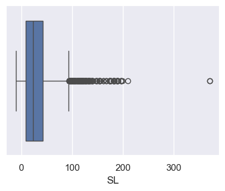
Changing some of the boxplot parameters
- Below we change the boxplot color and the size of the data points.
# Note below that the data argument is not quoted, but the x argument is quoted.
# "Flier" is the name for the outliers.
sns.boxplot(x='SL', data = op_data, color='red', fliersize=1.0);
pass
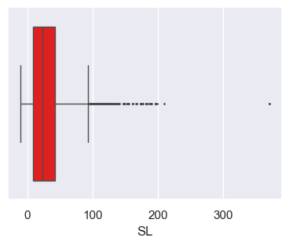
Passing arguments to matplotlib
- The underlying boxplot command in matplotlib has the rather complicated form:
Axes.boxplot(self, x, notch=None, sym=None, vert=None, whis=None, positions=None, widths=None, patch_artist=None,
bootstrap=None, usermedians=None, conf_intervals=None, meanline=None, showmeans=None, showcaps=None, showbox=None,
showfliers=None, boxprops=None, labels=None, flierprops=None, medianprops=None, meanprops=None, capprops=None,
whiskerprops=None, manage_ticks=True, autorange=False, zorder=None, *, data=None)- We will add a ‘notch’ that shows a 95% confidence interval for the median (notch=True) and remove the points (flyers).
- The key idea is that you can simply pass these extra arguments down from seaborn to matplotlib.
The tweaked boxplot
g = sns.boxplot(x='SL', data = op_data, color='red', fliersize=1.0, notch=True, showfliers=False);
print(type(g))<class 'matplotlib.axes._axes.Axes'>
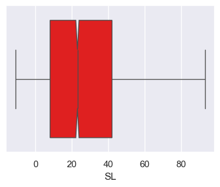
Figure and axes level plots
Figure and axes level plots
- The type of plot we just did is called an “axes-level” plot.
- There are also some high level plots, called “figure-level”, that are meant for fast exploratory data analysis.
- You can change the output of the figure-level plots, simply by changing the “kind” option.
- These high-level figure plotting functions do most of the work for you, choosing good defaults for the parameters.
Using the catplot command
- You can also make the box plot, from the high-level (figure-level) plotting function, ‘catplot’.
- The plot size can be controlled with the height and aspect arguments.
g = sns.catplot(x='SL', data = op_data, kind="box", height = 2, aspect=2) # A boxplot, from the "catplot" figure level command.
g.set_xlabels("Schedule lag") # You can tweak these plots using built in methods.
g.fig.suptitle('Distribution of schedule lags')
print(type(g));<class 'seaborn.axisgrid.FacetGrid'>
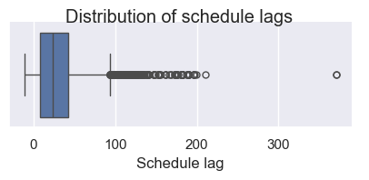
Changing the ‘kind’ argument
- A violin plot shows the distribution of a variable, in a way that makes it easier to compare distributions across levels of a categorical variable. For now, we will do a single plot.
- All we have to do here is switch out the ‘kind=“box”’ to ‘kind=“violin”’:
g = sns.catplot(x='SL', data = op_data, kind="violin",height=4) # A boxplot, from the "catplot" figure level command.
g.set_xlabels("Schedule lag") # You can tweak these plots using built in methods.
g.fig.suptitle('Distribution of schedule lags');
pass
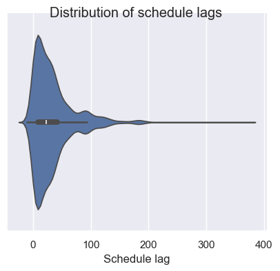
Histograms and distributions
- The figure-level command for a histogram is displot(), which by default will create a histogram of a numeric variable.
- It can also add a kernel density estimate (KDE) of the distribution. Basically, the KDE smooths the tops of the bins.

Fine tuning the plot
- Below we remove the KDE and add a “rug plot”, that marks the individual observations.
sns.displot(op_data['SL'], kde=False, rug=True,height=4, aspect=2); # Remove the kernel density estimate and add a rug plot.
pass
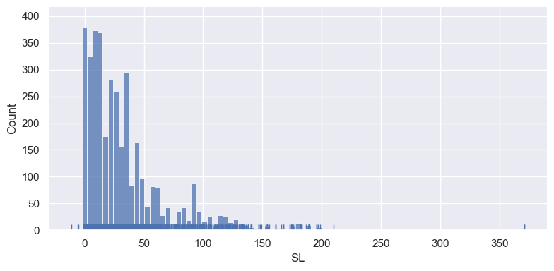
Saving a plot to a file
- There are various graphic file formats available, such as .png, .jpeg, .svg.
- You simply have to include the file extension in the name to choose between formats.
import os
os.chdir('C:\\Users\\water\\Dropbox (Penn)\\Richard\\Teaching\\7770f2026_Q1\\Images')
sns.displot(op_data['SL'], kde=True, height=4, aspect=2);
plt.savefig("output_{0}.png".format('OP')) # savefig method for png format.
plt.savefig("output_{0}.jpeg".format('OP')) # savefig method for jpeg format.
plt.savefig("output_{0}.svg".format('OP')) # savefig method for svg format.
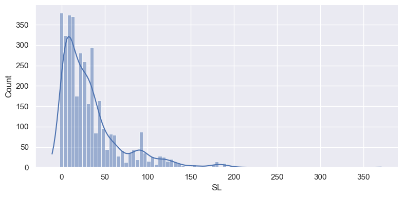
Plotting a categorical variable
- Using the kind=“count” argument on the figure level “catplot” we get a barplot showing the frequency of each value.
- But it needs some work!
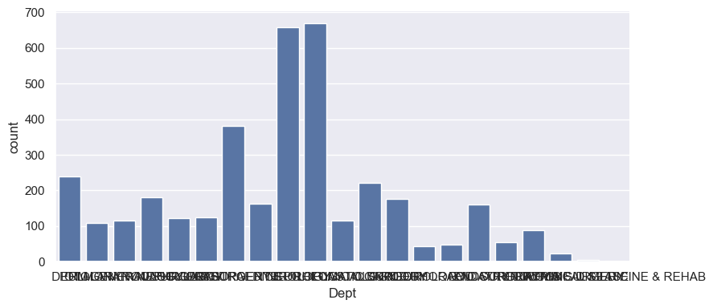
Creating a new version of the plot
- Below we pull out the top 5 departments, and create a new data frame with just rows from these Departments.
- Setting ‘set_xticklabels’ to rotate 45 degrees, greatly improves the readability.
- When saving the plot, we adjust the lower margin to accommodate the long labels.
Plot the data
- We can change the size of the catplot directly through the ‘height’ and aspect ‘parameters’.
#### Build the plot
g = sns.catplot(x='Dept', kind="count", palette="ch:.25", data=new_dept, height=3, aspect=2) #ch stands for a "cube-helix" color palette.
g.set_xticklabels(rotation=45, horizontalalignment='right')
plt.subplots_adjust(bottom=0.4) # This adds more white space to the bottom of the plot.
plt.savefig("output_{0}.png".format('Dept')) # savefig method.
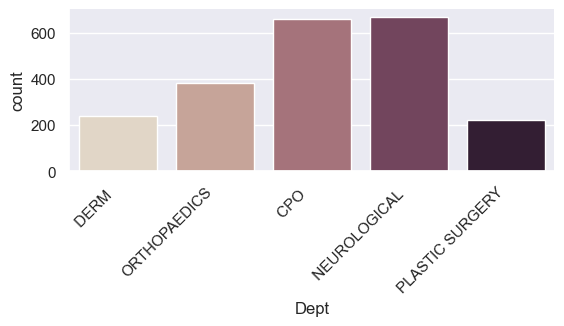
Faceting
- Faceting is essentially the term for creating a grid of plots, showing conditional relationships (the distribution of one variable, over the levels of another).
- You can do this by row and/or columns.
Faceting by the Sex column
new_dept = op_data.loc[op_data['Dept'].isin(top_dept.index)] # Keep all of the columns now.
g = sns.catplot(x='Dept', kind="count", palette="ch:.25", data=new_dept,
col="Sex", height=4, aspect=2) # Note the 'col' argument.
g.set_xticklabels(rotation=45, horizontalalignment='right');
pass
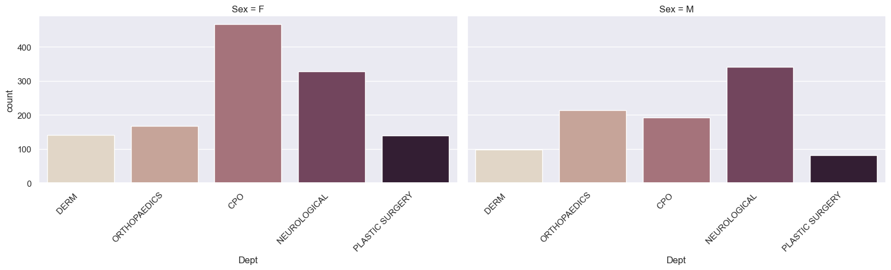
Row and column facets
- Here we condition on Sex (rows) and Status (columns).
g = sns.catplot(x='Dept', kind="count", palette="ch:.25", data=new_dept,
row = 'Sex', col="Status", height=2, aspect=1.5) # Note the 'col' argument.
g.set_xticklabels(rotation=45, horizontalalignment='right')
pass
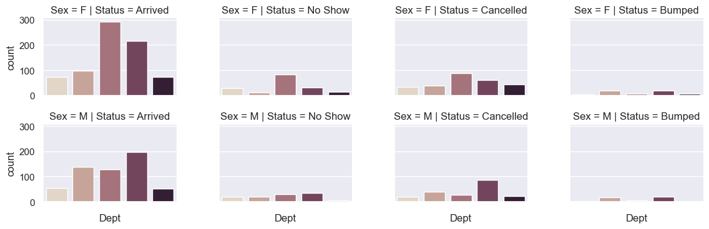
Making a pie chart
- There isn’t a pie chart type in seaborn, but we can use one from pandas.
dept_counts = op_data['Dept'].value_counts()[:5] # Just work with the frequencies here.
dept_counts.plot.pie(figsize=(6, 6)); # This is a pandas plot.
pass
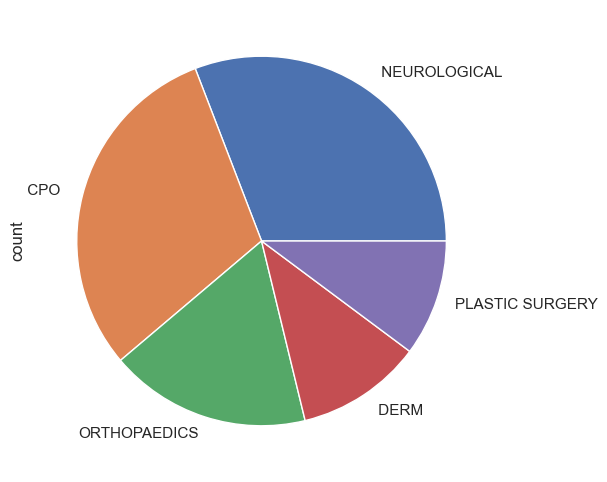
Color in Seaborn
Color in Seaborn
- Seaborn comes with built in color palettes and unless you are artistically talented, it is probably best to stick with them.
- You can view the default palette easily.
A continuous color palette
- When representing continuous or sequential, rather than categorical data, these may be more appropriate.
A list of possible colormaps
Possible values are: Accent, Accent_r, Blues, Blues_r, BrBG, BrBG_r, BuGn, BuGn_r, BuPu, BuPu_r, CMRmap, CMRmap_r, Dark2,
Dark2_r, GnBu, GnBu_r, Greens, Greens_r, Greys, Greys_r, OrRd, OrRd_r, Oranges, Oranges_r, PRGn, PRGn_r, Paired, Paired_r,
Pastel1, Pastel1_r, Pastel2, Pastel2_r, PiYG, PiYG_r, PuBu, PuBuGn, PuBuGn_r, PuBu_r, PuOr, PuOr_r, PuRd, PuRd_r, Purples,
Purples_r, RdBu, RdBu_r, RdGy, RdGy_r, RdPu, RdPu_r, RdYlBu, RdYlBu_r, RdYlGn, RdYlGn_r, Reds, Reds_r, Set1, Set1_r, Set2,
Set2_r, Set3, Set3_r, Spectral, Spectral_r, Wistia, Wistia_r, YlGn, YlGnBu, YlGnBu_r, YlGn_r, YlOrBr, YlOrBr_r, YlOrRd,
YlOrRd_r, afmhot, afmhot_r, autumn, autumn_r, binary, binary_r, bone, bone_r, brg, brg_r, bwr, bwr_r, cividis, cividis_r, cool,
cool_r, coolwarm, coolwarm_r, copper, copper_r, cubehelix, cubehelix_r, flag, flag_r, gist_earth, gist_earth_r, gist_gray,
gist_gray_r, gist_heat, gist_heat_r, gist_ncar, gist_ncar_r, gist_rainbow, gist_rainbow_r, gist_stern, gist_stern_r, gist_yarg,
gist_yarg_r, gnuplot, gnuplot2, gnuplot2_r, gnuplot_r, gray, gray_r, hot, hot_r, hsv, hsv_r, icefire, icefire_r, inferno,
inferno_r, jet, jet_r, magma, magma_r, mako, mako_r, nipy_spectral, nipy_spectral_r, ocean, ocean_r, pink, pink_r, plasma,
plasma_r, prism, prism_r, rainbow, rainbow_r, rocket, rocket_r, seismic, seismic_r, spring, spring_r, summer, summer_r, tab10,
tab10_r, tab20, tab20_r, tab20b, tab20b_r, tab20c, tab20c_r, terrain, terrain_r, twilight, twilight_r, twilight_shifted,
twilight_shifted_r, viridis, viridis_r, vlag, vlag_r, winter, winter_rColorbrewer
- There is function called colorbrewer that you can use to help create palettes.
- See color brewer for more information.
Check out the green graphic
g = sns.catplot(x='Dept', kind="count", palette=custom_palette, data=new_dept, height=4, aspect=2)
g.set_xticklabels(rotation=45, horizontalalignment='right');
pass
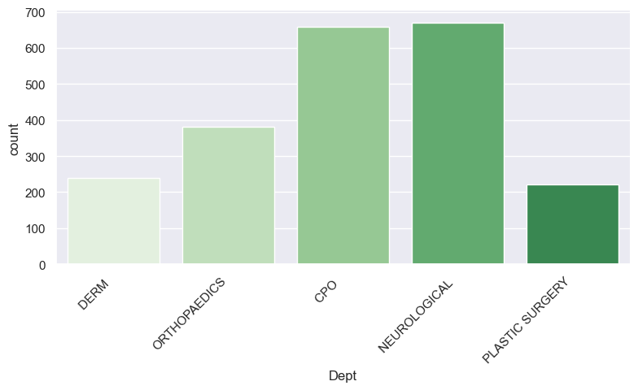
Cubehelix
- Yet another way of creating sequential palettes is with the “cubehelix” command.
- It takes many potential parameters and below is an example.
Defining your own colors
- Computers view colors as made up of red green and blue components.
- How much of each there is determines the exact color.
- Usually each RGB value goes between 0 and 255.
- Often they are represented in hexadecimal notation (base 16) as \(16^2\) = 256.
-
Below are four Wharton colors:
- Color 1: blue_one is (red= 0, green = 71, blue = 133).
- Color 2: blue_two is (red = 38, green = 36, blue = 96).
- Color 3: red_one is (red = 169, green = 5, blue = 51).
- Color 4: red_two is (red = 168, green = 32, blue = 78).
In hexadecimal notation these are
- Note the “#” character to indicate the hexadecimal.
- blue_one = “#004785”
- blue_two = “#262460”
- red_one = “#A90533”
- red_two = “#A8204E”
- You can use a ‘color dropper’ and then a decimal to hex converter to find the appropriate representation.
- Decimal to hex converter: converter . Or use the built-in Python hex() function.
The color dropper in MS Paint
- Note the RGB code for the light blue color in the bottom right of the “Edit Colors” window.
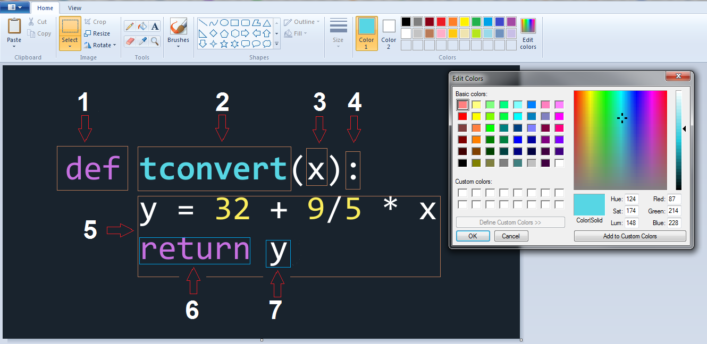
Build the new graph with custom colors
- We only have 4 colors, but 5 levels to the Department variable, so the colors get “recycled”.
g = sns.catplot(x='Dept', kind="count", palette=wharton_colors, data=new_dept, height=3, aspect=2)
g.set_xticklabels(rotation=45, horizontalalignment='right');
pass
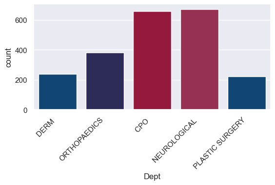
Relationships between variables
Relationships between variables
- It is very common to want to look at the distribution of a continuous variable over the levels of a categorical variable.
- The seaborn command for this is ‘catplot’ which we saw before to do a box plot, but we will now do comparison boxplots.
- I will work with the “top 5 departments” data frame:
Relationships between variables
sns.set_palette(sns.color_palette("flare")) # Use a different palette.
new_dept = op_data.loc[op_data['Dept'].isin(top_dept.index)] #Subset the data.
g = sns.catplot(x = 'Dept', y = "SL", data = new_dept, height=4, aspect=2) # The default "catplot"
g.set_xticklabels(rotation=45, horizontalalignment='right');
pass
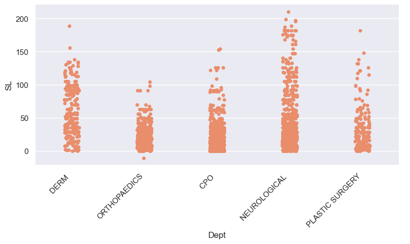
Comparison boxplots
- Here are box plots again, but now with one for each department.
sns.set_palette(sns.color_palette("Set2")) # Use a different palette.
g = sns.catplot(x='Dept',y="SL", kind="box", data=new_dept, height=3, aspect=2, hue='Dept') # The comparison boxplots
g.set_xticklabels(rotation=45, horizontalalignment='right');
pass
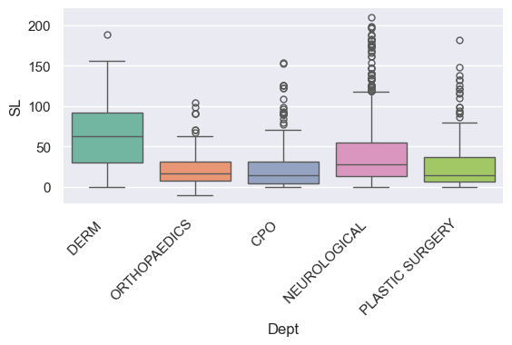
Comparison violin plots
- All we have to do is change the ‘kind’ variable.
g = sns.catplot(x ='Dept', y="SL", kind="violin", data=new_dept, height=3, aspect=2, hue ='Dept') # The default "catplot"
g.set_xticklabels(rotation=45, horizontalalignment='right');
pass
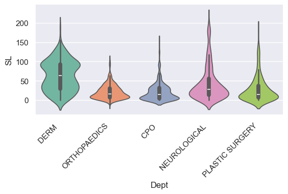
Adding a second categorical variable to the plot
- By using the “hue” argument, we can do the plot over the levels of another variable, to see how consistent the relationship is.
sns.catplot(x = 'Dept', y = "SL", hue ='Status', kind="box", data = new_dept, height=3, aspect=3); # Note the 'hue' argument.
pass
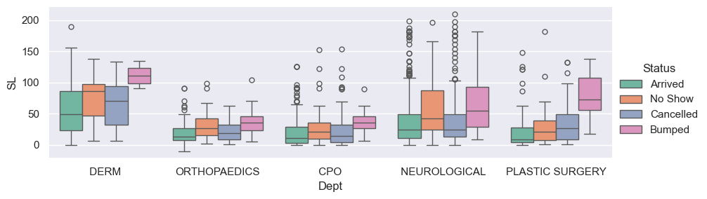
Another way to control the size of the plot
-
If you are using an axes level plot, you can set up the plot size in
the following way:
- Use the boxplot command and the axes argument.
f, ax = plt.subplots(1, 1, figsize = (10, 5)) # Set the size of the plot.
sns.boxplot(x = 'Dept', y = "SL", hue = 'Status', data = new_dept, ax=ax); # Note we are back to boxplot.
plt.savefig("output_{0}.png".format('Comps')) # savefig method for png format.
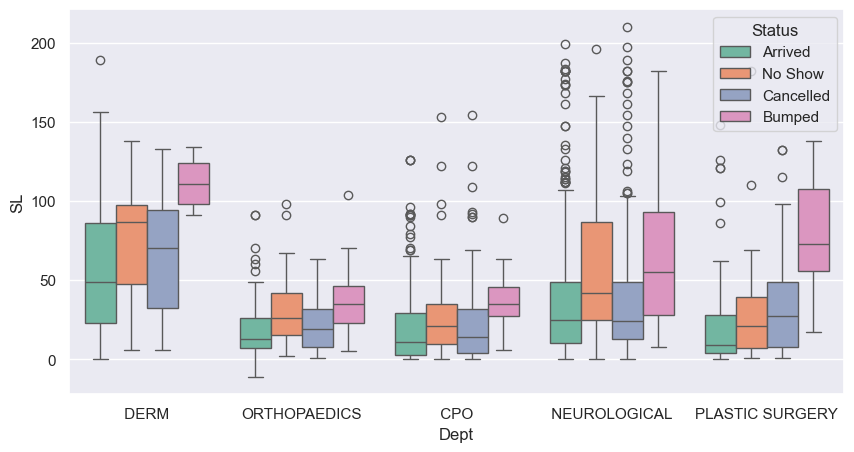
The ‘bar’ type
- Using a bar plot, by default shows the average Schedule Lag, by Status, within each Department.
- The bars (red lines) at the top are confidence intervals for the mean.
g = sns.catplot(x='Dept', y="SL", kind="bar", hue='Status', data=new_dept,
height=4, aspect=3, errcolor="red", errorbar=('ci', 95)) # The 'bar' kind.
g.set_ylabels("Average Schedule lag");
pass
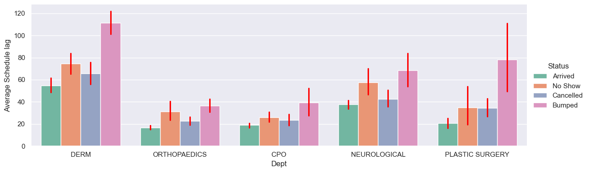
Plotting the association between two continuous variables
- The classic plot here is a scatterplot.
- There is the option to do a KDE of the joint distribution.
- As the outpatient data only has one continuous variable, we will use the car dataset instead.
os.chdir('C:\\Users\\water\\Dropbox (Penn)\\Richard\\Teaching\\7770f2026_Q1\\DataSets')
car_data = pd.read_csv("Car08_just_499.csv")
print(car_data.columns)Index(['Make/Model', 'MPG_City', 'MPG_Hwy', 'Weight(lb)', 'Seating',
'Horsepower', 'HP/Pound', 'Displacement', 'Cylinders', 'Origin',
'Transmission', 'EPA_Class', 'Length', 'Fuel', 'HEV', 'Turbocharger',
'Make', 'Model', 'GP1000M_City', 'GP1000M_Hwy'],
dtype='object')The default plot
This is a simple plot of the two variables.
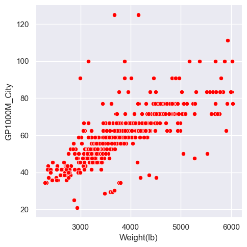
Coloring by a third variable
- The ‘hue’ argument makes the points different colors according to another variable.
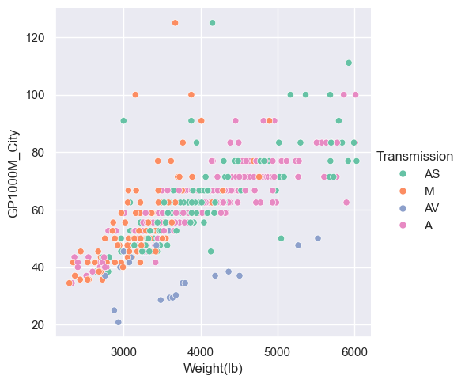
Adding different markers
- The ‘style’ argument changes the plotting character (which may be overkill).
sns.relplot(x="Weight(lb)", y="GP1000M_City", hue = "Transmission", style="Cylinders", data=car_data);
pass
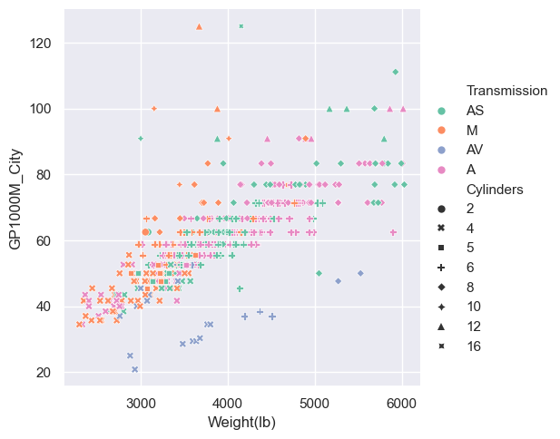
Change the color palette
- As usual, we can add a palette argument.
sns.relplot(x="Weight(lb)", y="GP1000M_City", hue="Transmission", style="Cylinders", palette="copper", data=car_data);
pass
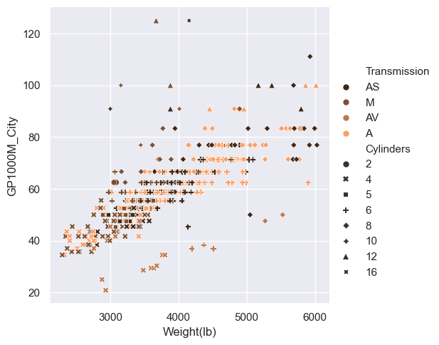
Adding a size based component
- We could potentially use another variable to determine the size of the points, via the ‘size’ argument.
sns.relplot(x="Weight(lb)", y="GP1000M_City", hue = "Transmission", size = "Horsepower",
sizes=(20, 200), style="Cylinders", palette="Reds", data=car_data, height=3, aspect=2);
pass
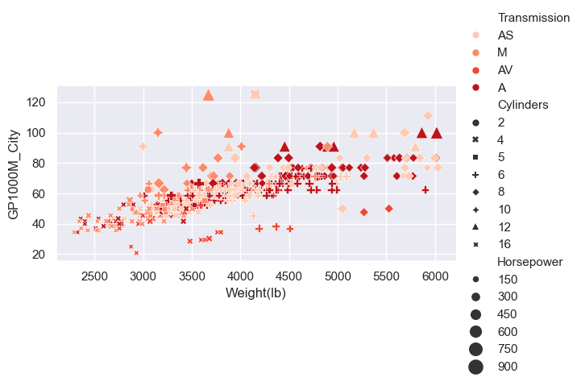
Plotting joint and marginal distributions
- The ‘jointplot’ will also add the univariate distributions on the ‘margins’ (edges) of the scatterplot plot.
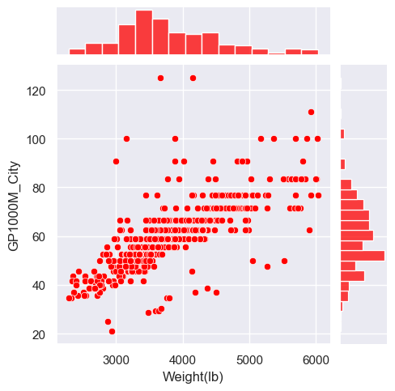
Using a KDE
- We can add one and 2 dimensional KDE’s by using the ‘kind’ equal “kde” option.
sns.jointplot(x="Weight(lb)", y="GP1000M_City", data=car_data, color="red", kind="kde", height=5);
pass
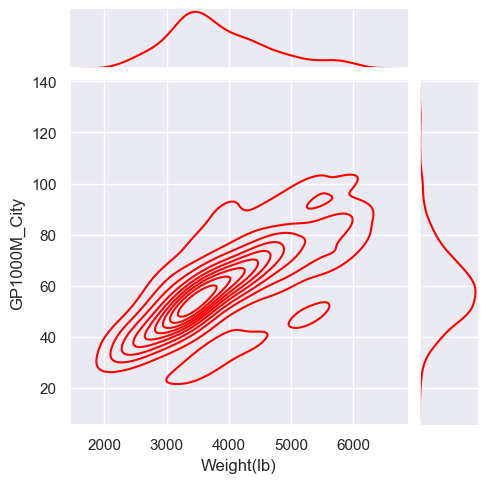
The scatterplot matrix
- A scatterplot matrix shows bivariate relationships and in seaborn uses the ‘pairplot’ command.
sns.set(style="whitegrid", font_scale=0.75) # Change the style
tmp_data = car_data[['GP1000M_City', 'Weight(lb)', 'Horsepower', 'Length', 'Transmission']]
sns.pairplot(tmp_data, hue="Transmission", height=2);
plt.savefig("output_{0}.png".format('Cars')) # savefig method for png format
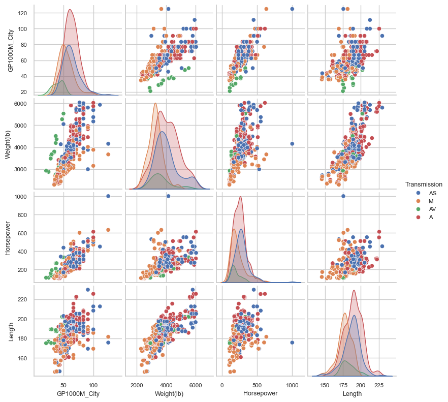
Plotting two categorical variables
- The usual plot for two categorical variables is called a “Mosaic plot” and plots the proportion in each level of a y-variable, over the levels of an x-variable.
- Seaborn doesn’t have this plot, but we can find one in the statsmodels package.
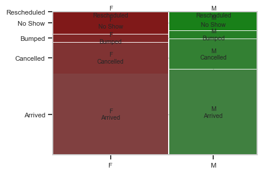
Plotting a categorical (y) against a numeric variable (x)
- One approach to this is to “discretize” the numeric variable.
- This means to creates buckets from it.
- Once the buckets are made, we can do a mosaic plot again.
- Pandas has two functions for this. One is “cut” and the other “qcut”.
- We will use qcut which will discretize the data into buckets with equal numbers of observations.
A mosaic plot for the discretized schedule lag
- We will do some fine tuning of the plot, with font size and color.
os.chdir('C:\\Users\\water\\Dropbox (Penn)\\Richard\\Teaching\\7770f2026_Q1\\Notes\\images') # This is where the plot will be saved.
op_data['SL_8Cut'] = pd.qcut(op_data['SL'], 8) # Create 8 levels with equal numbers in each category.
fig, ax1 = plt.subplots(figsize=(18, 9)) # Controlling plot size using matplotlib. This returns a figure to plot on.
plt.xticks(fontsize=8)
plt.yticks(fontsize=8)
plt.rcParams['font.size'] = 12
plt.rcParams['text.color'] = 'black'
mosaic(op_data, ['SL_8Cut', 'Status'], ax=ax1); # Plots the mosaic plot on the axes "ax1".
plt.savefig("mosaic_{0}.png".format('OP')) # savefig method for png format.
plt.close() # This will stop the plot being displayed here.
passThe finished mosaic plot
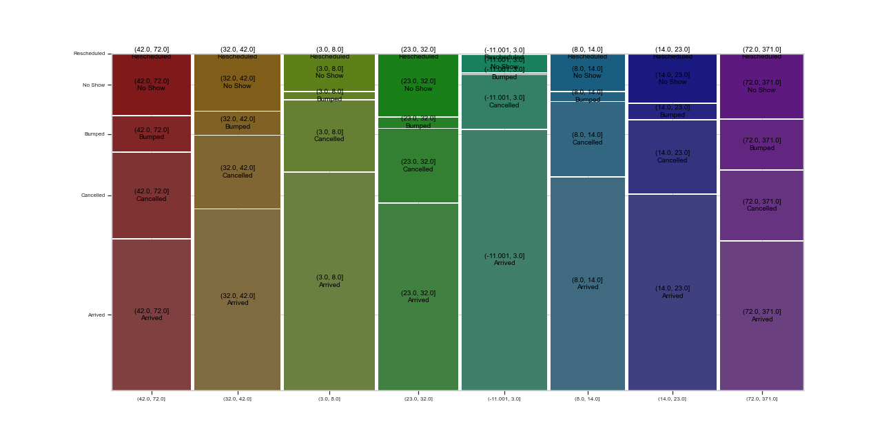
The structure of your data
The structure of your data
- Seaborn assumes that your data will be “well” structured.
- Well structured is sometimes called “tidy”, and means that there is one row for every observation and a column for each variable.
- In practice, a lot of datasets do not follow this structure and you may have to manipulate the data (reshape) before the seaborn graphics will work as expected.
- My suggestion is that you find a working example, look at how the data is structured, and then mimic that for your particular use case.
- To read a bit more detail, here’s a link to a paper that lays out the ideas in detail: tidy data
Summary
Summary
- Graphics.
- Why look at graphs?
-
Matplotlib and the seaborn libraries.
- Univariate graphics.
- Bivariate graphics.
- The pairs plot.
Seaborn figure-level plots
- displot: for the distribution of a variable.
- catplot: for the realtionship between a numerical and a categorical variable(s).
- relplot: for relationship between two variables.
- jointplot: a single pair-wise relationship plus marginal distributions.
- pairplot: for all pairwise relationships and marginal distributions.
Next time
Next time
- Statistical analysis and models